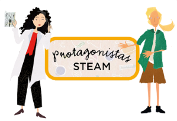
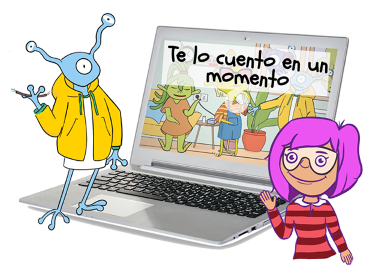
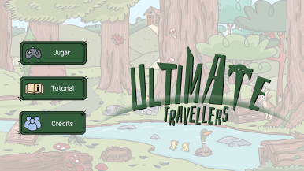

¿Qué es TIC TAC Recursos educativos?
Es una estrategia que consiste en acercar líneas de recursos educativos a todo docente, educador, madres y padres y, por supuesto, toda persona incluida en cualquier edad que quiera aprender de una forma dinámica y entretenida.
TIC TAC surge con la ilusión de contribuir y ayudar en la importantísima educación de nuestros pequeños, pero también con la ambición de que dichos recursos pudiesen llegar a cualquier persona que los pueda necesitar, o simplemente aprovechar y disfrutar.
Para lograr este objetivo, contamos con el estupendo trabajo de nuestro equipo de editores digitales que, junto a expertos en diferentes áreas con perspectiva educativa, han hecho realidad cada idea.
Contamos con recursos de todos los niveles educativos, desde Primaria hasta Bachillerato. Tomando como referencia la legislación básica vigente en materia educativa y partiendo del currículum totalmente actualizado y bajo la Ley Lomle de cada Comunidad Autónoma, en el que no solo se trabajan los saberes básicos y obligatorios, también valores, habilidades y competencias en diferentes ámbitos y de formas diferentes.
Podrás contar con diferentes alternativas para enriquecer las clases, con juegos donde se trabaja cada unidad de la materia, esquemas interactivos embebidos dentro los saberes, repasos trimestrales, fichas imprimibles, y nuestra joya de la corona, nuestra línea de Protagonistas Steam.
Os invitamos a escribirnos y nos pondremos en contacto con vosotros para explicaros y enseñaros las diferentes líneas. Os prometemos que no quedaréis indiferentes.
Y, por supuesto, creamos materiales totalmente personalizados, adaptados a vuestras necesidades. Contadnos cuál es vuestra necesidad o idea, y nosotros simplemente la haremos realidad.
Línea Protagonistas STEAM
Es una metodología basada en un enfoque interdisciplinar. Las protagonistas Steam han sido seleccionadas para este proyecto, no solo por la calidad de su trabajo científico o tecnológico, sino también por lo inspiradoras que han sido sus vidas sus vidas. Creemos que esto puede ser muy inspirador para el alumnado y para su educación emocional. Es un material muy fácil de utilizar en las aulas por su metodología lúdica y dinámica, por ejemplo, podemos convertirnos en detectives e Investigar sobre quién es la científica misteriosa, usando un cuaderno, un mapa, una foto….. También podemos imprimir y repartir tarjetas de información con la que daremos una clase . O, desarrolla tu ingenio con las Escapes room de científicas. Tenemos barajas de cartas imprimibles para los más pequeños, Cuentos en láminas, Escenografías para representar la vida de nuestras protagonistas. Incluso pueden hacerles una entrevista en la que además les proponemos retos chulísimos.
Diviértete y aprende junto a Albert Einstein, Ada Lovelace, Alexander Fleming, Jane Goodall, Marie Curie, etc… Y consigue todos los diplomas e insignias Steam.
Línea Te lo cuento en un momento
¿Dificultades con algunos conceptos claves? ¿No terminas de entender cuántos tipos de células tenemos? ¿Son los virus seres vivos? ¿Cómo se clasifican los minerales? Pero sobre todo… ¿Cómo quieres que te lo cuente? Explicamos los conceptos más enrevesados de cada unidad en diferentes formas y formatos. ¿Prefieres un vídeo? ¿un audio? ¿O tal un esquema? Conceptos minuciosamente seleccionados que servirán como un magnífico refuerzo. Esta línea incluye algunas fichas imprimibles de actividades, con su solucionario.
Línea Juegos Ultimate Traveller
La figura maliciosa de Tenebris está atacando diferentes puntos de nuestro planeta. Por favor, jóvenes investigadores, necesitamos vuestra ayuda para devolver todo a la normalidad y poder detener a Tenebris. Acompaña a nuestros amigos a través del Hospital, el Bosque, El arca….. resuelve todos los enigmas y consigue atrapar a Tenebris. Os advertimos, no será fácil, tendréis que encontrar los objetos que Tenebris ha escondido, relacionar para ordenador todo el caos, responder a sus inteligentes acertijos, etc.. Esta línea es para todos los cursos, y está clasificado por cursos y unidades.